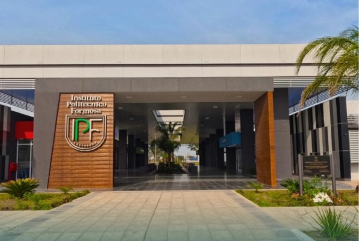
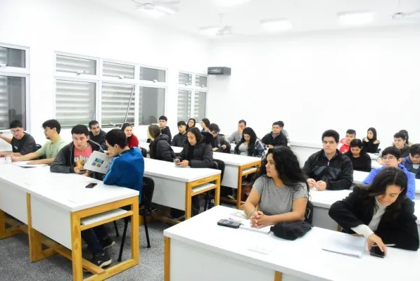
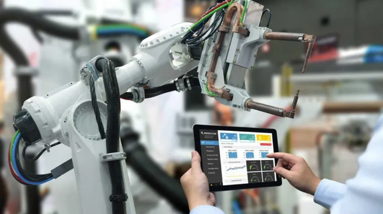
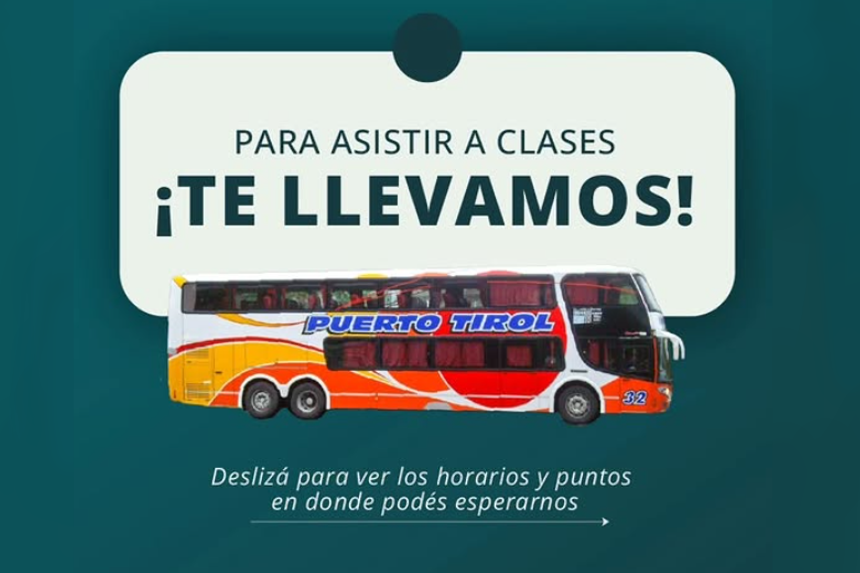
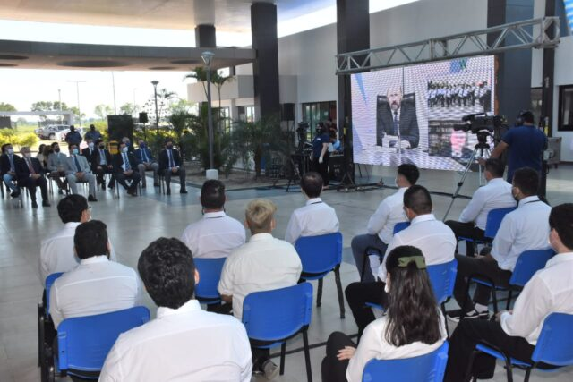
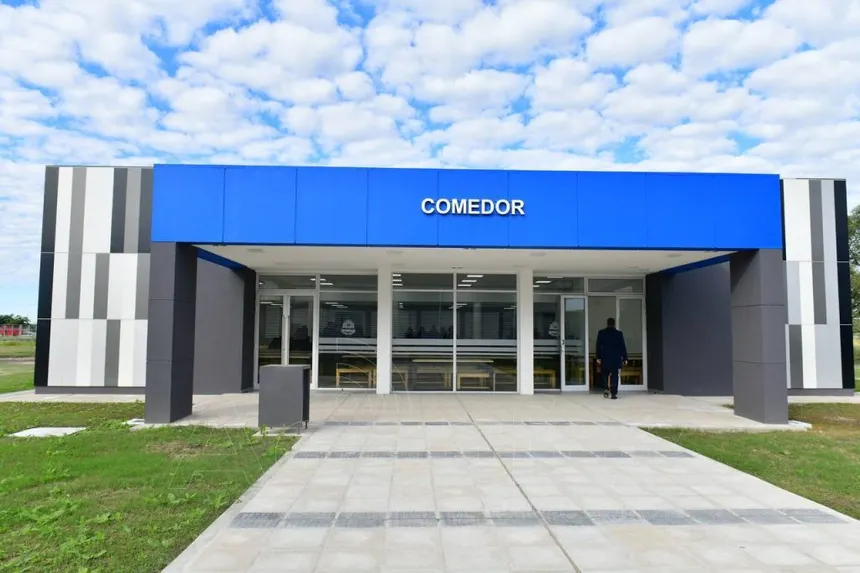

Instituto Politécnico de Formosa
¡Bienvenido!
Descripción
El Instituto Politécnico de Formosa Aquí encontrarás información sobre nuestras carreras, información sobre la institución como educación técnica Superior.
¿Qué es?
El Instituto Politécnico de Formosa es una institución educativa que ofrece carreras técnicas y profesionales en diversas áreas. Es un organismo descentralizado, es decir que tiene autonomía administrativa, financiera y técnica, dependiente del Ministerio de Educación de la Provincia de Formosa. El instituto se dedica a la formación de técnicos superiores en distintas disciplinas, brindando una educación de calidad y orientada a las necesidades del mercado laboral, establecido en el Decreto N° 18 del año 2018.



Tecnicatura Superior en Química Industrial
La Tecnicatura Superior en Química Industrial es una carrera técnica que tiene una duración de dos años y medio, las cuales comienzan de forma presencial luego de las vacaciones de julio. Los químicos industriales aplicar la ciencia química a los procesos industriales. Se dedican a la investigación de productos químicos a mayor o menor escala, y también abarcan campos como la química farmacéutica y medicinal.
Ver más
Tecnicatura Superior en Mecatrónica
La Tecnicatura Superior en Mecatrónica es una carrera técnica de tres años (6 cuatrimestres), que integra varias disciplinas como la electrónica, la mecánica, el control automático y las tecnologías de la información. Su objetivo es formar profesionales capaces de configurar, supervisar y mantener sistemas de automatización industrial, robótica y control inteligente, con alta demanda en el sector productivo.
Ver másTecnicatura Superior en Telecomunicaciones
La Tecnicatura Superior en Telecomunicaciones es una carrera técnica que tiene una duración de dos años y medio. Las cuales comienzan de forma presencial luego de las vacaciones de julio. Combina la ingeniería eléctrica y las ciencias de la computación para diseñar, implementar y gestionar sistemas de comunicación.
Ver másTecnicatura Superior en Desarrollo de Software
La Tecnicatura Superior en Desarrollo de Software Multiplataforma, una carrera de dos años (cuatro cuatrimestres) otorga la capacidad para el análisis, diseño, programación e implementación de software en diversas plataformas, con inserción laboral en empresas, industria y el estado formoseño.
Ver más
Colectivos
El transporte de estudiantes hacia el Instituto Politécnico Formosa (ubicado en el Polo Científico y Tecnológico) es gestionado mediante colectivos de larga distancia financiados por el Gobierno Provincial, no por el sistema de transporte urbano público Fermoza.

Beca Soberanía Tecnológica
El Instituto Politécnico Formosa (IPF) ofrece principalmente la Beca Soberanía Tecnológica, un programa de acompañamiento integral financiado por el Tesoro Provincial. Esta beca está destinada a estudiantes del interior de la provincia y a aquellos de la capital que se encuentran en situación de vulnerabilidad socioeconómica.

Comedor Universitario
El comedor del Instituto Politécnico Formosa (IPF) "Dr. Alberto Marcelo Zorrilla" ofrece un servicio de alimentación sostenido, nutritivo y de calidad que cubre las cuatro comidas diarias: desayuno, almuerzo, merienda y cena. Este esquema, parte del "Modelo Formoseño", busca garantizar la continuidad alimentaria durante la jornada intensiva de estudios (de 9 a 17 horas) para apoyar el rendimiento académico.